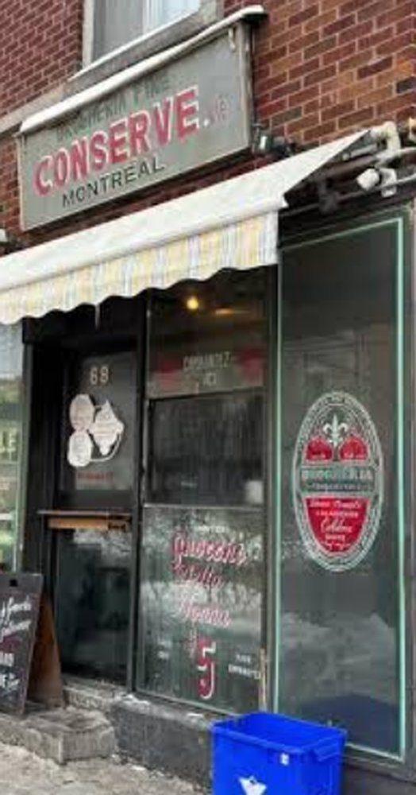

Photo : l'équipe (Manushi, Preshita, Fariba, Arina)
Drogheria Fine
68 Av. Fairmount O.
5 $, ou 6 $ avec fromage (source : Montreal Gazette)
Drogheria Fine est une petite épicerie italienne du quartier. Elle est connue pour ses gnocchis à 5 $, servis dans une boîte avec la sauce tomate de la nonna. Il y a souvent une file d'attente !